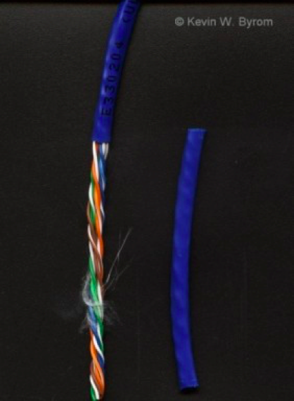

Twisted Pair Cable雙絞線-1 <<
Previous Next >> Categorizing Twisted Pair Cable分類雙絞線電纜-1
Twisted Pair Cable雙絞線-2
While fiber-optic cable is great for its speed, distance, and security, it hasn’t yet become commonplace in most networks.
儘管光纜在速度，距離和安全性方面都非常出色，但在大多數網絡中尚未普及。
Instead, we are still using the same type of cabling we have been using for the past two to three decades — twisted pair.
相反，我們仍在使用過去兩到三十年來一直使用的相同類型的電纜-雙絞線。
Twisted pair cable is the most popular physical LAN media in the world today.
雙絞線電纜是當今世界上最流行的物理LAN介質。
Each cable contains four pairs of individually insulated strands of copper wire.
每條電纜包含四對獨立絕緣的銅線。
Each pair is twisted together to minimize the amount of electromagnetic interference (EMI).
每對絞合在一起以最大程度地減少電磁干擾（EMI）。
The more twists there are in the cable, the less EMI there will be. Twisted pair cable is broken up into two types: unshielded twisted pair (UTP) and shielded twisted pair (STP).
電纜中的扭曲越多，EMI越小。雙絞線電纜分為兩種類型：非屏蔽雙絞線（UTP）和屏蔽雙絞線（STP）。

Shielded twisted pair cable is built very similarly to unshielded twisted pair, except that the pairs of wires are also surrounded by a metallic shielding (like foil).
屏蔽雙絞線電纜的構造與非屏蔽雙絞線非常相似，不同的是，成對的電線也被金屬屏蔽層（如金屬箔）圍繞。
This outer foil shielding minimizes the EMI to which the cable is exposed. This increases the security and reliability of the cable.
外部箔屏蔽層可最大程度地減小電纜所遭受的EMI。這增加了電纜的安全性和可靠性。
Unfortunately, however, this also increases the cost of the cable, so it is typically used only in high-production environments where the extra security is worth the extra cost.
但是，不幸的是，這也增加了電纜的成本，因此通常僅在高生產環境中使用，在這種環境中，額外的安全性值得額外的成本。
The more common type of cabling is unshielded twisted pair cable.
電纜的最常見類型是非屏蔽雙絞線電纜。
Instead of using extra shielding, this cable relies on the twisting of its copper pairs to minimize the effects of EMI.
該電纜不使用額外的屏蔽，而是依靠其銅線對的絞合來最大程度地減小EMI的影響。
Each twisted pair is twisted to insulate itself from the other pairs, and because there is no additional shielding, it is available at a lower cost than STP.
每個雙絞線都經過絞合，以使其自身與其他雙絞線絕緣，並且由於沒有額外的屏蔽，因此可以以比STP更低的成本獲得。
Therefore, UTP is the most common media of choice for small office, home office, residential, and many commercial networks.
因此，UTP是小型辦公室，家庭辦公室，住宅和許多商業網絡中最常見的選擇媒體。

Twisted Pair Cable雙絞線-1 <<
Previous Next >> Categorizing Twisted Pair Cable分類雙絞線電纜-1